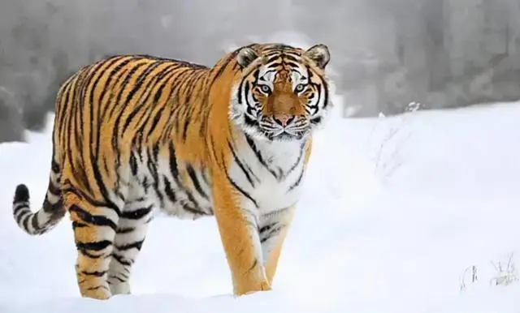
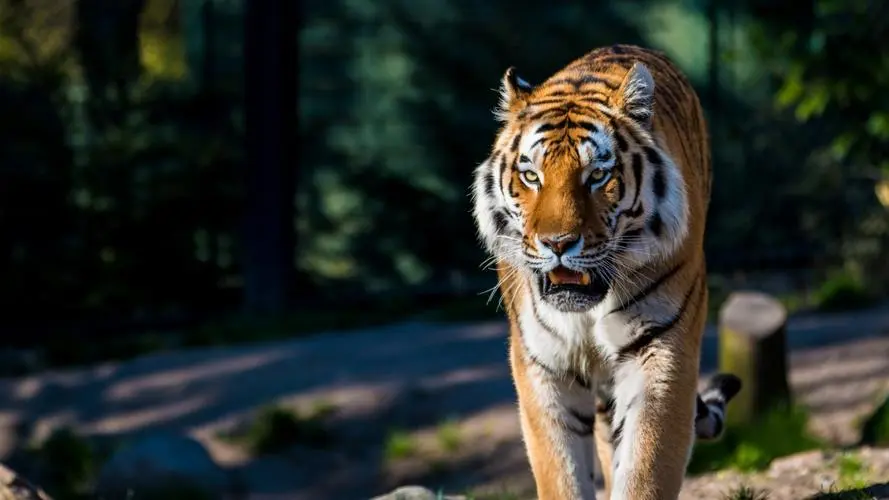

东北虎
东北虎（学名：Panthera tigris ssp. altaica）：是猫科、豹属动物。是虎的亚种之一。是体重最大的猫科动物，成年东北虎雄性体重平均为250千克，头体长约为2.3米；成年母虎平均体重约为170千克，体长约为2米，肩高1.1米左右，尾长1.3米左右。最大身长可达2.9米（含尾长） [1]。该物种体色夏毛棕黄色，冬毛淡黄色。背部和体侧具有多条横列黑色窄条纹，通常2条靠近呈柳叶状。头大而圆，前额上的数条黑色横纹，中间常被串通，极似“王”字，故有“丛林之王”之美称。东北虎的牙齿较强大，一般为30个。4个非常锐利的虎爪使用时伸出，不用时缩回爪鞘避免行走时摩擦地面。

百科
东北虎喜好远离人类居住区、地势平缓、冬季积雪较浅的成熟的红松-阔叶混交林和栎树林。东北虎最喜好的猎物是马鹿和野猪，由于大型猎物在食物贫乏的北方森林中密度很低，东北虎需要走很远才能找到它们，因此东北虎的活动范围远远大于南方的其它虎亚种。雌性东北虎的活动范围一般300-500平方千米，而雄虎活动范围可超过1000平方千米。

知识拓展
东北虎(Panthera tigris altaica)，也称西伯利亚虎，是地球上最大的猫科动物。它的名字和其他老虎一样，源于它曾经游荡的地方，100年前，该物种在西伯利亚、俄罗斯远东、中国东北和朝鲜的广阔范围内活动。如今，世界上最后的东北虎有95%都在俄罗斯远东地区生活，那里有黑龙江与中国接壤。黑龙江在俄语中称“阿穆尔河”，因此，它们已经更普遍地被称为“阿穆尔虎”(Amur Tiger)。估计截止2010年有20多只东北虎的一小群常驻在中国东北地区生存。